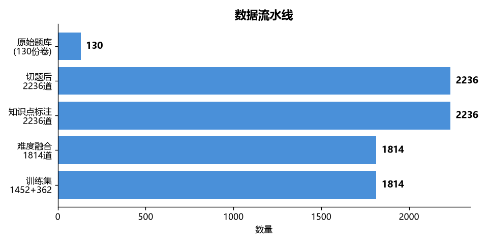
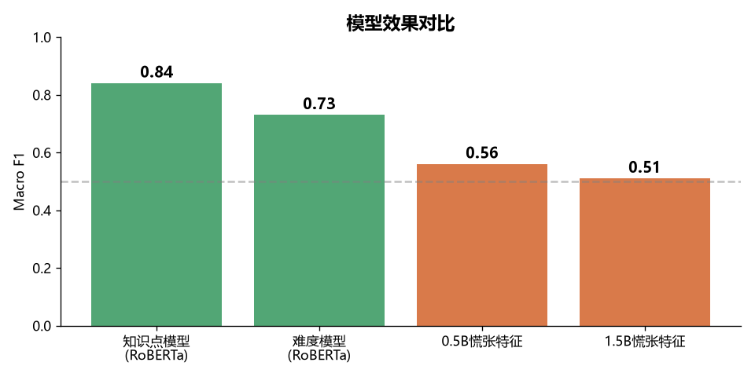
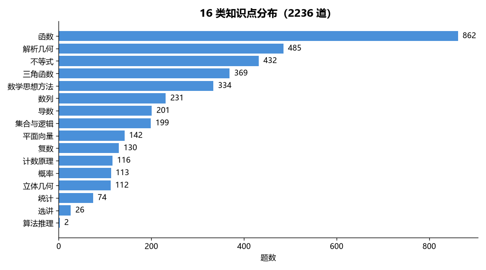
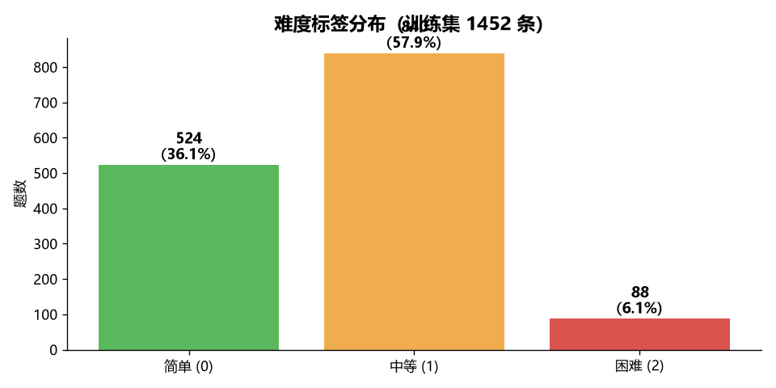

本项目面向高中数学教学场景，构建一套本地化、离线可用的 AI 模型，为 2200+ 道高考数学真题自动标注知识点与难度等级，并接入 PySide6 桌面应用，为教师出题与组卷提供智能辅助。

数据来源于 2016-2026 年共 130 份高考数学卷，经切题、去重、标注、融合四步处理，最终产出 1814 条高质量训练数据。

项目初期尝试"让小模型解题提取慌张特征"的技术路线（F1 仅 0.51~0.56），后调整策略为"直接用 RoBERTa 做文本分类"，知识点与难度双双突破 0.7。
| 方案 | 思路 | F1 | 结论 |
|---|---|---|---|
| 0.5B + 12维行为特征 | 小模型解题，提取熵/重复率等"慌张特征"，训线性分类器 | 0.56 | 信号弱 |
| 1.5B + 12维行为特征 | 换更大模型，同样的特征工程 | 0.51 | 反而更差 |
| RoBERTa 多任务 | 直接文本分类，不再提特征 | 0.73/0.84 | 成功 |

16 类知识点中，"函数"、"解析几何"、"不等式"位列前三，符合高中数学的知识结构；"算法与推理证明"样本极少（2 条），是模型学习的短板。

| 层级 | 技术 | 用途 |
|---|---|---|
| 数据层 | Python + pandas + SQLite | 题库管理、清洗、去重 |
| 标注层 | qwen3.7-plus / qwen3.6-plus API | 知识点与难度的初步标注 |
| 训练层 | 超算（PyTorch + HuggingFace） | 模型微调 |
| 模型层 | RoBERTa-base-chinese | 文本分类骨干 |
| 推理层 | 本地 CPU（PyTorch） | 离线秒级推理 |
| 应用层 | PySide6 桌面应用 | GUI 界面 |
| 时段 | 工作内容 |
|---|---|
| 08:00 - 10:00 | 题库整理、解析原始 JSON、去重与划分 |
| 10:00 - 12:00 | 大模型知识点标注（16 类，2236 条） |
| 12:00 - 14:00 | 难度标注与三模型融合（qwen7 + qwen6 + 本地） |
| 14:00 - 16:00 | 超算环境配置、模型训练 |
| 16:00 - 18:00 | 本地部署、应用接入调试 |
| 18:00 - 22:00 | PySide6 应用集成、三选一弹窗、Git 收尾 |
groupby.apply 返回值类型变化，导致 KeyError；改用显式循环。top_logprobs 而非 probs，导致熵特征全为 0。Set-Content 把 LF 改 CRLF，diff 虚报 3500 行改动；core.autocrlf true 解决。app/infrastructure/ai/local_difficulty_classifier.py — 本地难度分类器models/base_model/ — RoBERTa base 权重（本地加载）models/difficulty_model/ — 微调后的难度模型（390MB）app/infrastructure/ai/ai_client.py — 难度请求拦截走本地app/container.py — 装配本地分类器app/application/difficulty_service.py — 本地优先 + prefer 参数app/application/question_service.py — 批量本地重析 + AI 辨识走本地app/presentation/views/question_bank_view.py — 本地按钮 + 保存时三选一